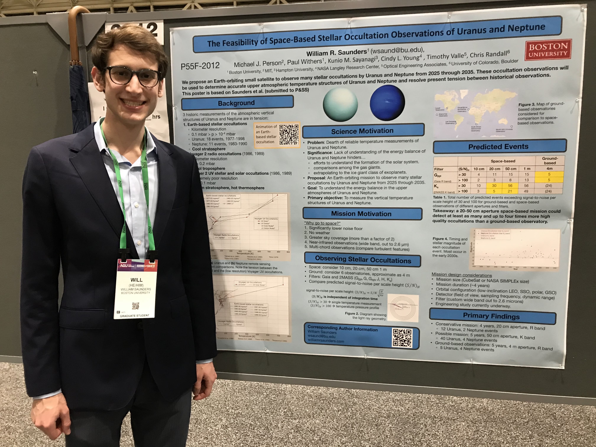
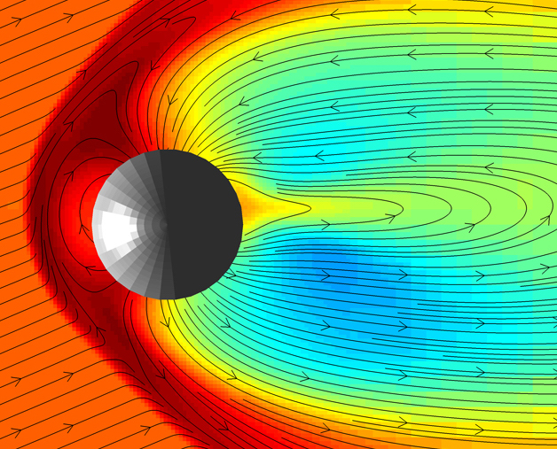
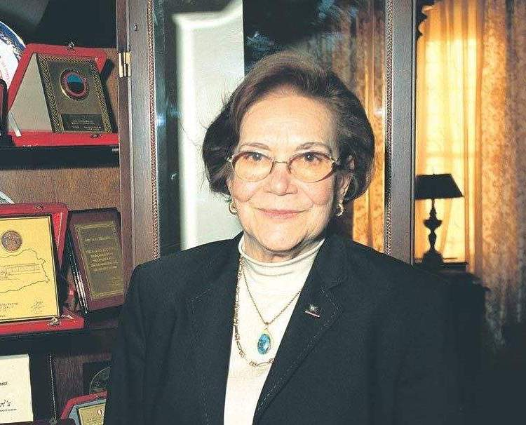
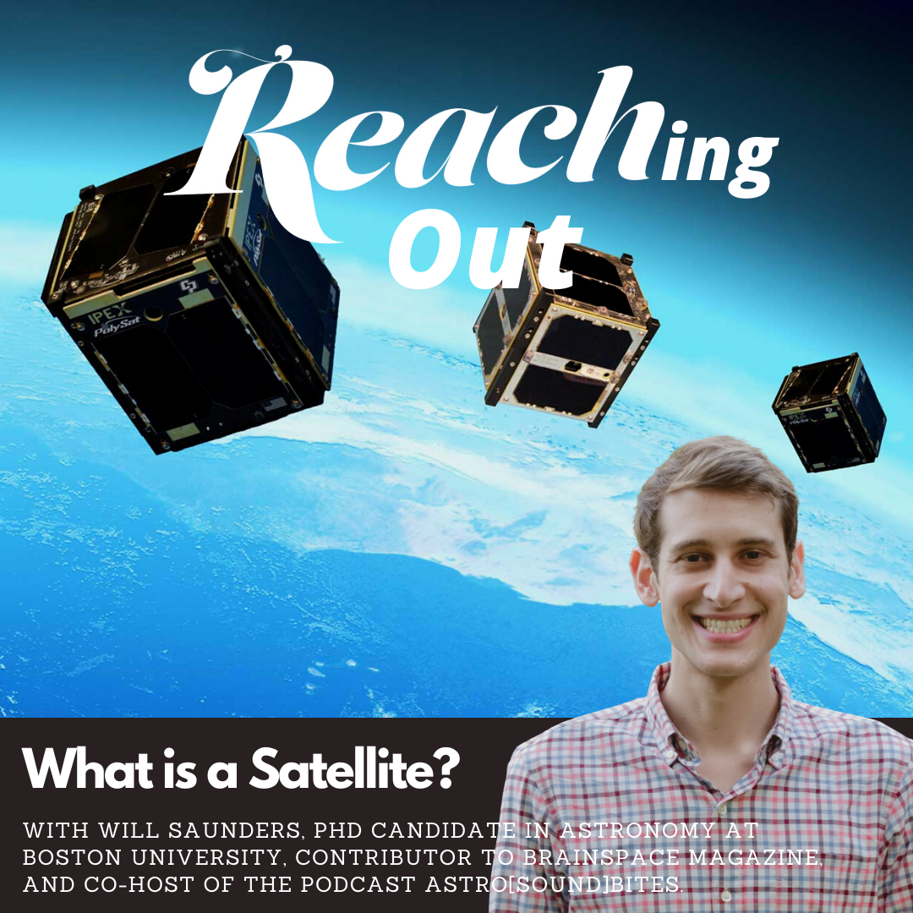

I am a fifth year Ph.D. candidate in the Astronomy Department at Boston University. I am the proud recipient of a 2022 Future Investigators in NASA Earth and Space Science and Technology (FINESST) Fellowship. I work with Prof. Paul Withers at BU and Dr. Mike Person at MIT to determine the upper atmospheric temperatures in Uranus and Neptune, the farthest planets from the Sun.
I received my Bachelors of Arts in Physics & Astronomy summa cum laude from the University of Pennsylvania in 2018, where I worked with Prof. Gary Bernstein studying trans-Neptunian objects.
Uranus and Neptune are collectively called the ice giants because their atmospheres contain clouds of ice, instead of liquid. Methane ice clouds are what give Uranus and Neptune their characteristic blue colors. At 20 and 30 times farther from the Sun than Earth, Uranus and Neptune, respectively, receive 0.25% and 0.1% of the sunlight that hits Earth. It's unsurprising that their atmospheres are so cold.
What is surprising, is the finding from the Voyager 2 spacecraft in 1986 that Uranus' upper atmosphere is incredibly hot. The maximum temperature detected was 800 K (527 °C, 980 °F), making Uranus' upper atmosphere among the hottest of all the planets. Neptune was found to be slightly cooler but still much warmer than expected. Further complicating these results are inconsistencies in the Voyager observations that challenge their veracity. Without missions to Uranus or Neptune for decades to come, it remains extremely challenging to even identify the tempertaure of these planets, let alone uncover how they are heating so strongly. This problem is so enigmatic that some astronomers call it the "energy crisis."
In my research, I aim to better understand the upper atmosphere temperature structures of Uranus and Neptune and work toward an understanding of the energy crisis. To do this, I use a technique called stellar occultations.
A primer on stellar occultations
A stellar occultation occurs when a nearby planet passes in front of a distant star, from our point of view. When this occurs, the atmosphere from the planet causes starlight to refract on its path to Earth. The effect of refraction here is smearing out the light, like looking at car headlights on a foggy day. As the planet keeps moving, the starlight is refracted by the deeper parts of the atmosphere until it can no longer be seen. Then, at the end of an occultation, the star gradually becomes visible again.
In October 2022, I observed an occultation by Uranus using the NASA Infrared Telescope Facility. Below is an animation of what that occultation looks like, sped up about 100 times. Watch as the star disappears and then reappears behind Uranus. Uranus is approaching its northern hemisphere solstice and because Uranus rotates on its side, that means the rings of Uranus are nearly facing the Earth!
Below is a simulation of what an idealized occultation looks like and the light curve that is produced from the observation.
I analyze light curves like this to measure properties of the planet's atmosphere. Since the Voyager flybys of Uranus and Neptune in the late 1980s, stellar occultations are the only way to probe upper atmospheric temperatures. In my dissertation research, I use a combination of archival and new Uranus and Neptune stellar occultations. I am working to confirm or refute the Voyager temperature findings and identify possible causes of the heating.

Standing next to my poster at the American Geophysical Union 2021 Meeting in New Orleans, LA.
In my most recent paper, I explored observing stellar occultations from space using a small, Earth-orbiting satellite. This work constituted the first efforts to design a mission called the Shadow Chaser to make these measurements. Here are the major findings of my paper:
In a 5-year mission, we could observe 45 Uranus occultations. From the ground, you can only observe 6 of those Uranus occultations.
This mission might make it possible to resolve the discrepencies and determine accurate temperatures of the upper atmospheres of Uranus and Neptune, long before a mission could arrive.
In my first PhD project, I reanalyzed a historic Mars stellar occultation from 1976 and compared it to the findings of the many Mars landers and rovers. Here are the major findings of my work:
I produced extremely high-resolution temperature profiles of the middle Martian atmosphere.
I detected the presence of gravity waves, which are small-scale atmospheric disturbances in the middle Martian atmosphere.
I found similar wave signatures in the data obtained by the 8 Mars rovers and landers that flew through the middle atmosphere of their way down.
Astrobites
Astrobites is a website run entirely by graduate students in astronomy and publishes daily summaries of recent astronomy publications. Astrobites is designed for undergraduate science majors to learn about the lastest work in astronomy in only a few minutes.
Some posts go beyond the traditional paper summaries, covering topics of applying for graduate school, student funding, and problems facing astronomy today. In November 2019, I published the first book review post for Astrobites, something I'm hoping becomes a new trend.
I wrote for Astrobites from January 2019 through December 2020. In 2021, I served as the Undergraduate Co-Chair and ran a webinar on advising (see link below). Since 2022, I served on the Administration Committee. Links to all my 14 Astrobite posts are below. My author page can be found at astrobites.org/author/wsaunders .
A simulation of the solar wind impinging directly onto Mercury, which might have been significant in causing Mercury to lose its mantle. (Spalding & Adams 2020)  Dilhan Eryurt was the the first Turkish astronomer to work at NASA and the only woman at Goddard during her tenure. She fundamentally changed our understanding of the Sun.
In 2019, Malena Rice at Yale University, Alex Gagliano at University of Illinois Urbana Champaign, and I founded the bi-weekely podcast astro[sound]bites. Our episodes feature recent Astrobites centered around a theme in astronomy, but occasionally venture beyond research, discussing topics like professional development, graduate student life, sonification, and more.
In May 2022, Malena graduated and two new co-hosts joined: Sabrina Berger at McGill University and Kiersten Boley at The Ohio State University.
Working on a podcast has long been a dream of mine and I'm thrilled to be on the air. Find us on astrosoundbites.com, Apple Podcasts, Google Play, Spotify, SoundCloud, Amazon Music, and Audible. We encourage listener feedback--email us at astrosoundbites@gmail.com.
Astro[sound]bites has been funded by Outreach and Education Grants from the Division for Planetary Sciences of the American Astronomical Society between 2020 and 2022. In addition, we received a Sharing Science grant from the American Geophysical Union in 2022. We have presented about our podcast at numerous scientific and outreach conferences (see my CV for full listing).
Brainspace is an augmented reality science magazine for children 9-13 years old. Since 2019, I have written six stories that have been published in Brainspace. Though I usually write about astronomy and space, my most recent article (publishing soon) is all about Pi. (Hoping to have links to my stories available soon.)
REACH: A Space Podcast for Kids

In March 2022, I was featured in an episode of REACH, answering the question "What is a Satellite?" Take a listen to my answer!
In September 2021, I made a guest appearence on GBH-TV in Boston, helping answer the question about where the phrase "dog days of summer" comes from. Watch the segment here: https://youtu.be/CZerMXwQJxU.